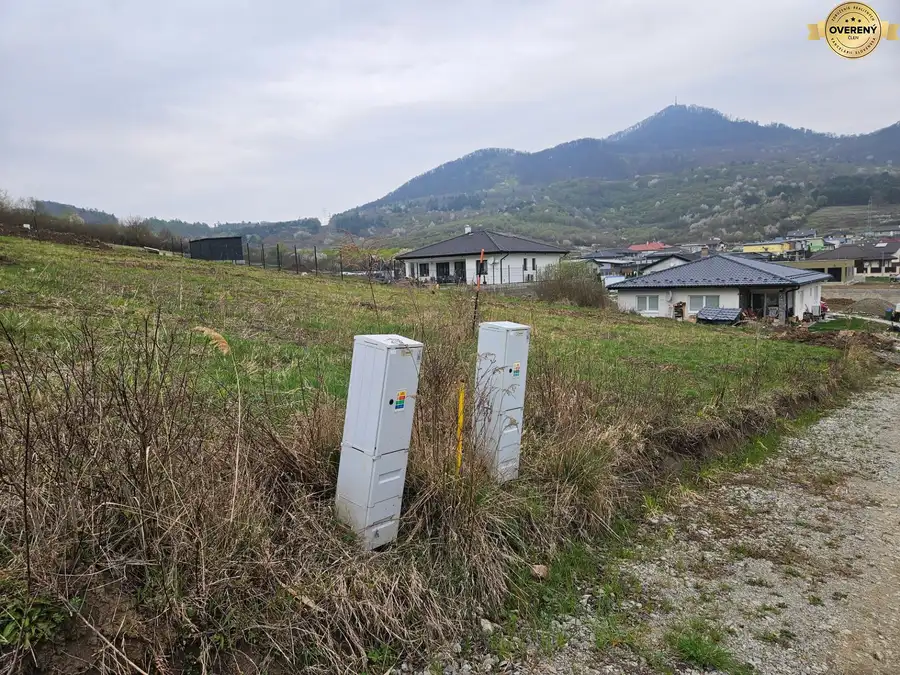
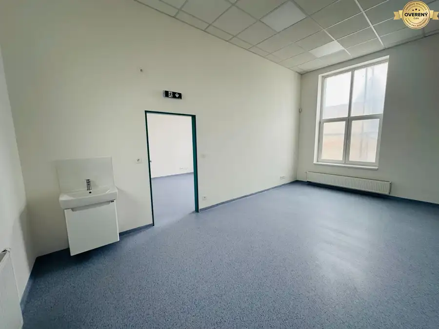
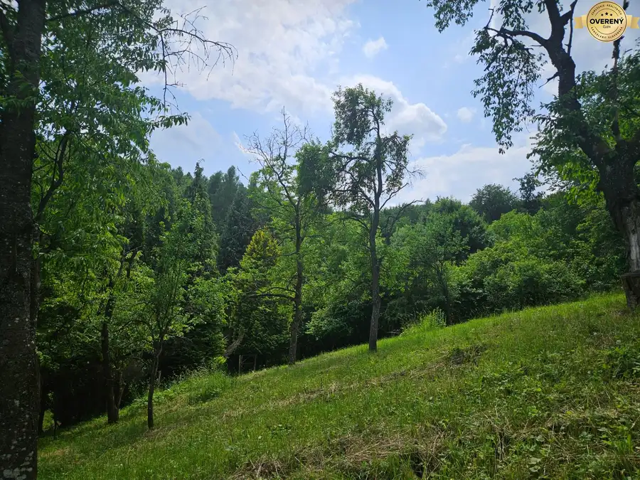

Na predaj záhrada s chatou
Cemjata
- Dispozícia1-izbový
- Plocha29 m²
- Poschodie0.
- Stavúplne prerobený
- Vlastníctvoosobné
O nehnuteľnosti
Hľadáte miesto, kde si po práci oddýchnete, cez víkend si vychutnáte rannú kávu pod stromami alebo budete pestovať vlastné ovocie a zeleninu?
Ponúkame na predaj krásnu záhradu s dreveným záhradným domčekom v vyhľadávanej lokalite Cemjata.
Predstavte si posedenie na terase s priateľmi alebo s rodinou ideálna na relax v prírode. Zažite atmosféru kľudu v príjemnom prostredí obklopený zeleňou.
Nehnuteľnosť sa nachádza na svahovitom pozemku s výmerou 861 m2 s bazénom. Na krásne upravenom pozemku okrem chatky a bazénu je garáž, záhradné posedenie s kozubom, splachovacie WC, prístrešok na drevo.
Pozemok ponúka súkromie, množstvo zelene a pokoj.
Súčasťou je aj drevená záhradná chata v ktorej je elektrika a voda, s rozlohou 29 m², ktorá poskytne vhodný na oddych. .
Chata pozostáva s kuchyne spojenej s obývačkou kde je aj liatinová piecka, kúpeľne a na poschodí je spacia časť s veľkým úložným priestorom. Pred 5 rokmi prebehla rekonštrukcia. Nová strecha, komín, koninova vložka, zateplenie 15 cm polystyrénom, nové čerpadlo a pod.
Veľkou výhodou tejto nehnuteľnosti je studňa, z ktorej je privedená voda do chaty, WC a je aj rozvod na polievanie pozemku.
Chata sa nachádza v blízkosti zastávky MHD
Nehnuteľnosť ponúka príležitosť vytvoriť si vlastný kúsok raja len pár minút od ruchu mesta.
Cena: 99 000€ pri rýchlom jednaní je možná dohoda na cene
V prípade záujmu ma neváhajte ma kontaktovať na tel.č.
Parametre
| Rozloha pozemku | 861 m² |
|---|---|
| Zastavaná plocha | 29 m² |
| Úžitková plocha | 29 m² |
| Poschodie | prízemie |
| Počet izieb | 1 |
| Vlastníctvo | osobné |
| Stav | úplne prerobený |
| Voda | studňa |
| El. napätie | 230/400V |
| Plyn | nie |
| Kanalizácia | nie |
| Internet | nie |
| Kúpeľňa | vaňa |
| Vykurovanie | vlastné - pevné palivo |
| Pivnica | nie |
| Garáž | áno - 1 auto |
| Postavené z | Zmiešané |
| Zariadenie | zariadený |
| Zateplený objekt | áno |
| Strecha | po rekonštrukcii |
| Bazén | exteriérový |
| Krb | áno |
| Klimatizácia | nie |
| Energetický certifikát | nie |
| Terén | svahovitý |
| Prístupová cesta | neupravená cesta |
| Dátum zverejnenia | 4. 9. 2026 |
Kde to je
Mohlo by Vás zaujímať

Pozemok4 89 300 €Na predaj stavebný pozemok Fintice Fintice 940 m² -Chcete pre svoju rodinu zabezpečiť bývanie v dome a zároveň v dobrej lokalite s dobrou dostupnosťou do mesta za rozumnú cenu? Takýto pozemok Vám…
Nebytové priestory4 1 390 €Na prenájom ambulancia v centre mesta Prešov 139 m² PhDr.Erika Majorošová na prenájom klimatizované priestory v novo vybudovanom súkromnom zdravotnom zariadení pre všeobecnú alebo odbornú ambulanciu…
Pozemok6 199 990 €Na predaj veľký stavebný pozemok v lese a len 15 min. od centa mesta Prešov 2650 m² -Chcete pre svoju rodinu zabezpečiť bývanie v dome a zároveň v dobrej lokalite s dobrou dostupnosťou do mesta za rozumnú cenu? Takýto pozemok Vám…